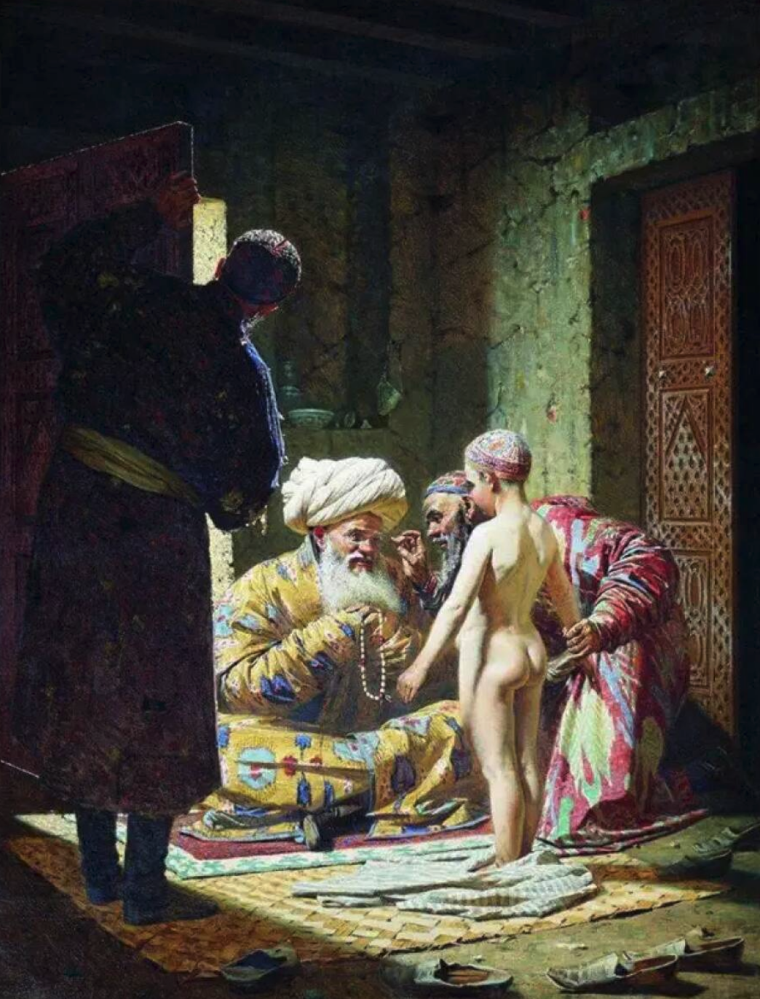

Imperial Expansion & War: Works documented military campaigns, borderlands, and conflicts in Central Asia and the Caucasus, sometimes celebrating conquest and sometimes offering stark, anti-war realism.
Ethnography & Travel: Painters accompanied scientific and military expeditions, recording local dress, architecture, markets, and customs alongside early photography.
Identity & Exoticism: Artists navigated the contrast between "Western" modernity and "Eastern" tradition.
